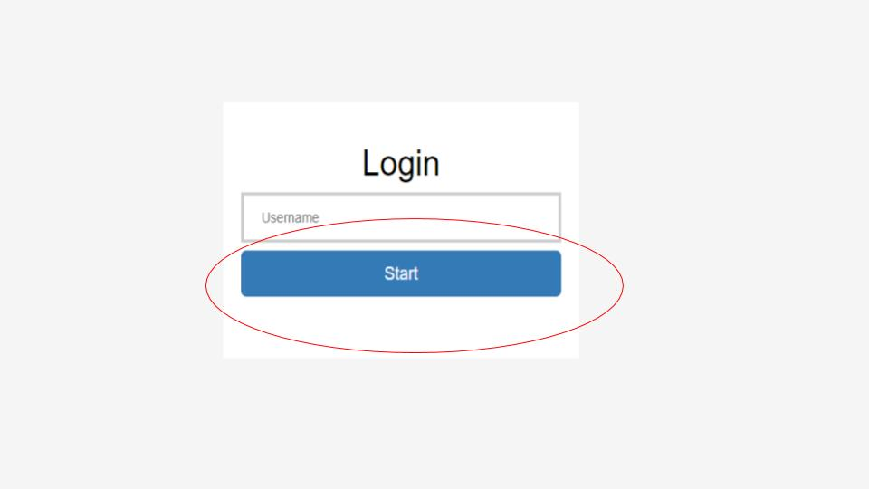

This task involves assessing claims regarding particular interventions
and outcomes that are made in biomedical articles.
Specifically, you will be asked to indicate whether an article
(which will describe the conduct and results of a clinical trial)
reports evidence that agrees with a particular prompt stating the
relationship between interventions and outcomes of interest. You will
first be asked to assess this based only on the abstract if possible.
If this is not possible, you will use the full text.
Enter the username we provided on Upwork and press Start.
